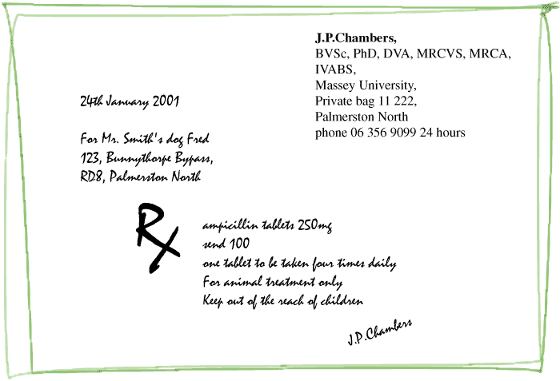

A prescription is a set of instructions to a pharmacist to make up and supply a medicine. They are usually only used in veterinary practice for infrequently used medicines. Animal owners can also ask for a prescription so that they can get it filled by another vet, or a veterinary medicines trader, if they think that this will be cheaper. The legal requirements for a prescription vary, but it is good practice to write all presriptions in the same way. Pharmacists have a legal responsibility to verify a prescription: if they don't like it they will not fill it.
Prescriptions for veterinary medicines (authorisations in ACVMspeak) are a grey area in the law. The requirements for presecriptions for human drugs are set out in the Medicines Regs, and vets prescribing human drugs must stick to these. It is good practice to follow the same requirements for veterinary medicines. There is an ACVM code of practice written by the NZVA for writing prescriptions, but it is not clear if it is a legal requirement. The NZFSA has issued the snappily entitled "Veterinarians Recognised (under s 62, ACVM Act) to Issue a Valid Authorisation for Purchase and Use of Restricted Veterinary Medicines Requiring Veterinary Authorisation Perfromance and Technical Standard" but it is not clear if this is actually law either.
"Authorisation" is a term used by the ACVM Group where most people would talk about a prescription. They usually take the form of a note in the case records of an animal or farm to the effect that the client can be supplied with drugs, although the definition is constantly changing. Note that this is a different definition from other countries. Bear in mind that authorisations for veterinary medicines will probably be filled by someone who knows nothing about pharmacy.

Sample prescription.
Prescription writing goes back a long way. The superscription is usually taken to be an abbreviated form of the Latin recipe = take, but could also be a representation of the Eye of Horus, supposed to enlist his aid in making the drug work!
A prescription must be written in ink and should include:
Fully electronic presriptions may be allowed soon. The NZVA have prescription forms available.
Prescriptions used to be written in Latin, and some Latin abbreviations are still seen. However, prescriptions should be written without abbreviation and in English. Abbreviations are illegal in prescriptions for controlled drugs.
for information only:
Veterinary - may not be recognised by pharmacists
Human
This is a form of prescription, and the requirements are much the same. Bear in mind that all animals to which medicated feed is given are food animals. The manufacturer is not allowed to make up the feed until he receives the written directions. Use the NZVA production animal prescription pad.
Keep a record!